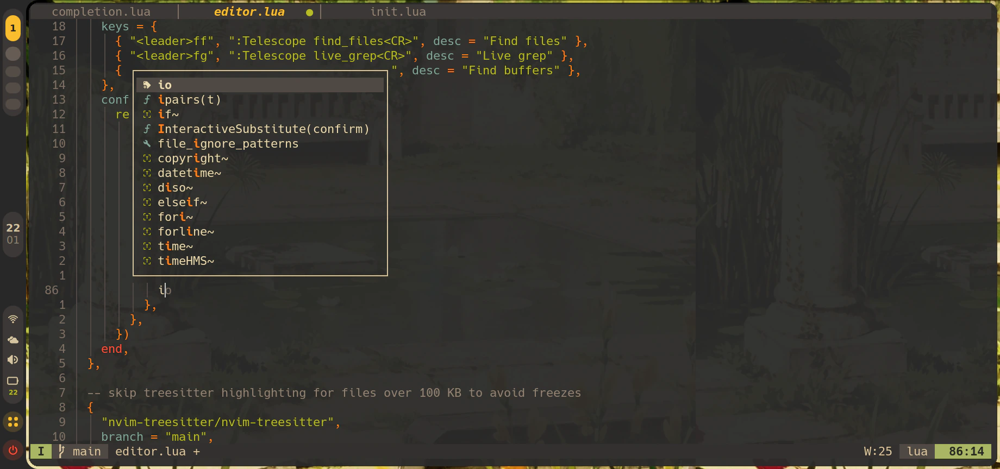
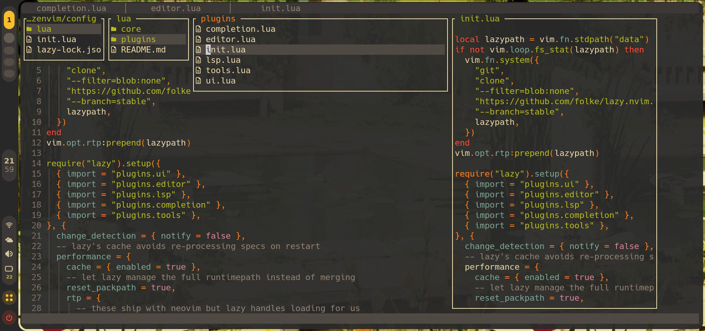

Lightweight Neovim for Any Device
Zenvim is a lightweight Neovim configuration for Termux on Android, tuned for low-end devices and on-screen keyboards. It starts in 40–70 ms and includes LSP, completion and Telescope.
What you get
A minimal config that does the everyday work of an editor.
-
Starts in 40–70 ms
Measured init time on an Android phone. Plugins load lazily through lazy.nvim, so Neovim is ready almost as soon as you open it.
-
Minimal, not bloated
Only the plugins you actually use. Nothing extra to slow it down or get in your way.
-
Sets itself up
Install it and start the editor. Plugins and language servers are set up automatically.
-
Made for small devices
Light on resources, and keybindings chosen to be comfortable on a mobile keyboard.
-
Easy to understand and change
The configuration is well structured, so you can read it, see how it works, and modify it yourself.
-
Everything an editor needs
Language servers for HTML, CSS, TypeScript, JSON, Emmet and Bash (via Mason), completion with blink.cmp and LuaSnip, Telescope and mini.files for finding things.
Screenshots
Zenvim running in Termux.


Install
One command in Termux. It takes a few minutes the first time.
-
Prerequisites
-
Run the installer
Termux — one command$ curl -fsSL https://raw.githubusercontent.com/nurmuhammedjoy/zenvim/main/build | bashTermux — by hand# back up your current config mv ~/.config/nvim ~/.config/nvim.bak # get Zenvim git clone https://github.com/nurmuhammedjoy/zenvim.git mkdir -p ~/.config/nvim cp -r zenvim/config/* ~/.config/nvim/ # remove the clone rm -rf zenvim- Your existing
~/.config/nvimis backed up to~/.config/nvim.bak. - The installer only works in Termux on Android.
- Your existing
-
First launch
- Neovim downloads plugins and language servers, so stay online. If a server is missing, run
:Masonto install it.
- Neovim downloads plugins and language servers, so stay online. If a server is missing, run
Keymaps
The leader key is Space.
No keymap matches “”. to see them all.
Forgot a key? Press Space and wait. which-key shows what comes next.
What’s inside
Everything is pre-configured and loads only when needed.
- Core
- lazy.nvimplenary.nvim
- Interface
- gruvbox.nvimlualine.nvimbufferline.nvimdressing.nvimindent-blankline.nvimwhich-key.nvim
- Editing
- mini.filestelescope.nvimnvim-treesitternvim-autopairsComment.nvimnvim-surroundmini.move
- Language support
- nvim-lspconfigmason.nvimmason-lspconfig.nvimblink.cmpLuaSnipfriendly-snippets
- Terminal
- toggleterm.nvim
Contribute
Bug reports and pull requests are welcome.
Found a bug or want a feature? Open an issue, or send a pull request with these steps:
Fork the repository.
Create a branch:
git checkout -b feature/my-changeCommit your changes and push the branch.
Open a pull request.